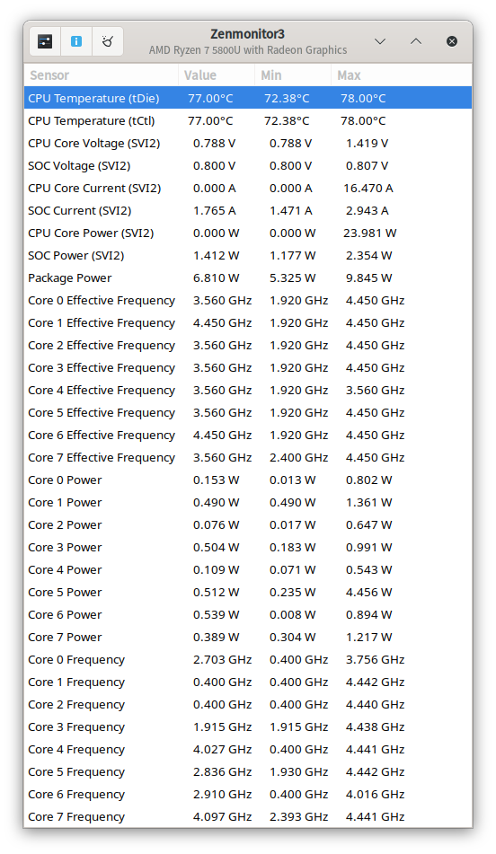

Linux上的電源管理
前言
這篇文章主要是偏向我對於網路上關於Linux電源管理的內容的整理，以及我自己在筆電上實作的結果，如果想要更加了解可以查看文章中的參考資料。
我的筆電型號是Swift SFX14-41G，CPU為5800U，因此在底下的實作中有針對只能在AMD與Ryzen上進行的電源管理設定。
CPU
如果不算GPU的話，一個系統中CPU大概率是最耗電的部分，因此大部分的電源管理都是針對CPU來進行，像是限制運行頻率之類的，CPU如果可以省電，那麼將可以給電池續航帶來顯著的提升。
CPU的省電主要是靠調節CPU運行的頻率，而Linux中調整CPU頻率依靠CPUFreq子系統，CPUFreq定義了Scaling governors 和Scaling drivers兩個選項，可以透過改變這兩個選項來改變CPU的調度，更詳細的內容，可以查看Archwiki[1]裡的介紹。
Scaling governors 和Scaling drivers的功能如下
- Scaling governors： 調度策略，決定CPU頻率要跑哪個頻率，並傳遞給Scaling drivers執行，大部分的driver都定義了四種調度器，每種driver提供的調度策略雖然名稱相同，但調度並不完全一樣，大部分情況下ondemand或schedutil可以滿足多數需求
- performance： 始終維持CPU最大頻率
- powersave： 始終維持CPU最小頻率
- ondemand： 在負載時使用高頻率，閒置時逐漸降低到最低
- schedutil： 根據CPU使用率調整頻率，且調速快
- Scaling drivers： 調度驅動，直接與CPU交互，將governors決定的頻率傳到CPU，調整CPU的頻率
Scaling drivers
因為我使用AMD的CPU，這部份就只會提AMD CPU可使用的調度器，完整列表可參考Archwiki[1]
在AMD平台上可以使用的driver有3種，acpi_cpufreq、amd_pstate和amd_pstate_epp，其中amd_pstate又有三種模式，分別為passive、guided和active，設定為active模式時使用的driver為amd_pstate_epp，可以在kernel command line parameters中設定選擇哪一種driver的哪種模式[2]
amd_pstate=disable使用的driver為acpi_cpufreq，此driver為核心中CPUFreq負責，使用ACPI提供的CPU能效等級來調度，好處是基本所有的CPU都可使用此driver，但是調度較粗糙，無法達到精細的調度來省電amd_pstate=active使用的driver為amd_pstate_epp，在此模式下由CPPC(Collaborative Power and Performance Control)決定運行頻率，只提供performance與powersave兩種governor，driver將governor與EPP(energy performance preference)的值提供給CPPC來決定頻率，由於需要CPU內有CPPC，因此只有zen2後支援此driver；這個driver除了可以調整governor，還可以額外設定EPP，可以理解成在governor的電源指示上做微調，有4種EPP，性能和耗電從高到低分別是performance、balance_performance、balance_power、power，這個部分就按需選擇即可amd_pstate=guided使用的driver為amd_pstate的guided模式，此模式同樣使用CPPC，但是可以在OS內設定最高及最低性能，CPPC會在範圍之間自動決定運行頻率，同樣的，因為對CPPC有需求，只有zen2後可以使用此driveramd_pstate=passive使用的driver為amd_pstate的passive模式，此模式下由driver來決定運行頻率，類似acpi_cpufreq，但可能會好一點
目前大部分的核心編譯設定CONFIG_X86_AMD_PSTATE_DEFAULT_MODE=3，即核心在沒有設定時預設使用amd_pstate_epp，可以在/proc/config.gz裡的Config中找到目前運行核心的編譯設定。
核心編譯設定的定義可以在kernel的源始碼中找到，在drivers/cpufreq/Kconfig.x86中config X86_AMD_PSTATE_DEFAULT_MODE底下有定義設定數值對應預設使用的driver
- 1 -> Disabled
- 2 -> Passive
- 3 -> Active (EPP)
- 4 -> Guided
至於這幾種driver要選擇哪一種的問題，我參考了phoronix的測試[3]，amd-pstate-epp的表現很好，在CPU閒置時他可以達到接近acpi_freq在powersave governors的耗電量，但是在有需求時它可以自動boost到較高的頻率，而不是像其他driver的powersave governor，只會保持在最低頻率，幾乎不可使用。我個人的體驗覺得amd-pstate-epp的表現不錯，相比於passive或guided在續航上有較好的表現。
Setting
可以透過操作/sys底下的檔案來改變kernel設定的driver與governor
driver
1 | |
<driver>的值可以為active/guided/passive/disable
governor
1 | |
<governor>的值可以是/sys/devices/system/cpu/cpu*/cpufreq/scaling_available_governors中提供的選項
EPP
1 | |
<EPP>的值可以是/sys/devices/system/cpu/cpu*/cpufreq/energy_performance_preference中提供的選項
frequencies
1 | |
boost
設定是否開啟turbo boost
1 | |
工具
前面章節介紹了調整CPU省電的方法，但是如果每次拔下插頭都要做一堆設定總是不方便的，雖然可以自己寫一個腳本被udev rules觸發或是寫一個daemon監控acpi電源事件，不過目前linux上已經有很多成熟的電源管理專案了，沒有必要重複造輪子。
目前linux常見的電源管理方案有以下幾種
- tlp： 大部分人的推薦，省電設定包含了CPU、無線、USB、GPU等等，幾乎所有設備的省電設定都可設置，而且可以使用tlpui來用GUI進行設定，可以設定一套接AC時的設定和使用電池時的設定，可以在離電後自動切換，也可手動切換模式，堪稱電源管理工具的瑞士刀，只是需要良好的設定。
- power-profiles-daemon： 一個較新的電源管理工具，只針對CPU做幾項設定，可使用tlp重現相同的功能[4] (後文會說明)，ppd會內置3種配置power、balanced、performance，優點是不需配置，就可以達成不差的效果，雖然只針對CPU做省電設定(前文有提到大部分耗電是CPU造成的)，而且對桌面環境有很好的支持，KDE Plasma和Gnome都可以直接在Taskbar上進行三種配置的切換。
- tuned： 和tlp相似，有豐富的省電選項可以設置，這款工具由RetHat負責維護，因此RH系的Linux大部分都是使用這個，Fedora在41後預設安裝tuned而不是ppd[5]；使用人數較tlp少，但最近tuned推出了tuned-ppd這個提供ppd的兼容層，可以達成和ppd一樣對桌面環境很好的支持，同時又有和tlp一樣豐富的功能，也許我之後會嘗試這個工具。
- auto-cpufreq： 也是近幾年討論比較多的工具，它一樣只針對CPU做設定，調整CPU的頻率，根據它的文檔，這個工具可以根據工作負載自動決定CPU的頻率來達到省電的功能，我個人是覺得CPU內的CPPC單元應該可以有更好的效果啦，畢竟判斷工作負載同樣需要算力，有興趣可以自己測試看看。
- thermald： 這個工具和省電其實沒有很大的關係，它主要關注發熱，可以設定達到溫度自動降頻，好處是和前面幾個工具都不衝突，前面幾個工具一般都是建議只裝其中一個，畢竟每個工具都是用同樣的操作方式進行省電設定，如果幾個都在跑大概率會衝突。
- powertop： 這個工具其實也和省電沒有什麼關係，主要是它可以查看目前系統CPU的耗電量、idle、C狀態之類的，不過他也有提供
--auto-tune選項，不過這個選項的省電設定會很激進，可能會影響系統的使用，我一般只有在需要極致省電的時候才會在開啟了tlp下再執行sudo powertop --auto-tune
在tlp、ppd、tuned和auto-cpufreq這4個工具中，我曾經使用過tlp和ppd，目前是又從ppd換回tlp了，大概可以多提升幾十分鐘的續航，畢竟多了一些外圍設備的省電；我個人建議筆電一定要進行省電設定，如果不想查文檔，可以直接裝ppd即可，如果不做電源管理，可能windows下能用6小時，Linux下只剩2~3小時，哪怕只有ppd，也可以把續航拉回正常的水平
Tuned-ppd vs tlp - Fedora Discussion
Confused about power saving: TLP vs tuned vs powertop, etc : r/Fedora
TLP or Power-Profiles for Battery Life - General system / Newbie - EndeavourOS
[TRACKING] PPD v TLP for AMD Ryzen 7040 - Framework Laptop 13 / Linux - Framework Community
tlp vs. power-profiles-daemon : r/Fedora
這些討論都只是參考，如果想要達成最好的省電，還是要在自己的電腦上做測試，我是懶得做精細的測試了，就tlp用著就很好
TLP
這段主要會講我對tlp在使用電池下的設定，我設定在連接AC下是什麼省電都關閉，抱持最大性能的運行
在使用電池時我設定tlp的CPU設定與ppd的power模式下相同，並做了一些修改，ppd的三種模式的設定相當於tlp中的PLATFORM_PROFILE_ON_AC/BAT、CPU_ENERGY_PERF_POLICY_ON_AC/BAT和CPU_BOOST_ON_AC/BAT[4]
ppd的performance設定等於
1 | |
balanced
1 | |
power
1 | |
我個人在使用電池下，有關處理器的設定為
1 | |
可以視自己的機器不同來做調整，tlpui裡都有對每個選項做相關設定
CPU以外的部分我基本沒有更改什麼設定，如果有發現像是USB斷線或是網路/音訊設備閒置後斷線，可以把那部份的省電關掉即可
other Tools
- cpupower： 前面就有用到的工具，可以設定CPU使用的governors、運行的頻率，也可以查看目前CPU調度相關的資訊，
cpupower frequency-info - turbostat： 用來查看CPU每顆核心boost的狀態，也會顯示C狀態的比例，一般不太會需要這個工具
- lm_sensors： 統整電腦內各種感測器的狀態，可以獲得各種零部件的溫度或是風扇轉速
Ryzen only Tools
- ryzenadj： 可以理解為等同Intel XTU的工具，如果BIOS有開放設置，可以在OS內設定CPU的功耗、溫度牆或是超頻，只是我電腦BIOS沒有開放這些選項，所以我無法使用
- zenpower3/zenpower： 提供zenpower的dkms模組，可以更精確的獲得CPU內感測器的數值，如電壓、電流等
- zenmonitor3/zenmonitor： 將zenpower的資訊列表呈現在GUI上的工具

- amdctl： 纇似ryzenadj，同樣無法使用
- zenstate： 調電壓曲線的工具，好像也可以超頻，同樣無法使用
- ryzen-ppd： 一個用來幫助ryzen省電的工具，但我跑不動，看起來也沒什麼人用
- ryzen_smu： 一個CPU內SMU(System Management Unit)驅動的核心模組
不過AMD沒有公布SMU可以使用的指令，目前只有Matisse和Vermeer的指令有被試出來，在ryzen_smu的github[6]上有給出，其他處理器系列能使用的指令只有Test和GetSMUVersion這兩個，我個人測試5800U也只有這兩個指令會有反應
1 | |
參考
- CPU frequency scaling - ArchWiki ↩
- amd-pstate CPU Performance Scaling Driver — The Linux Kernel documentation ↩
- Ryzen Mobile Power/Performance With Linux 6.3’s New AMD P-State EPP Driver - Phoronix ↩
- power-profiles-daemon — TLP 1.7.0 documentation ↩
- Changes/TunedAsTheDefaultPowerProfileManagementDaemon - Fedora Project Wiki ↩
- ryzen_smu/docs/rsmu_commands.md at master · leogx9r/ryzen_smu ↩